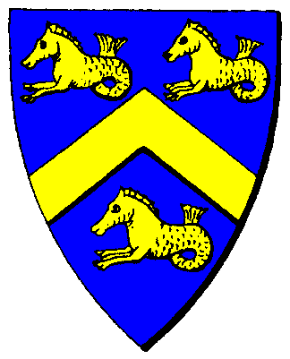

|

|
Das schwarze Brett
|
|
| Übersicht,
Geschichten (RPG) |
|
Großes Herz und großes Mundwerk (18  ) )
|
Marco del Monte
 |
Che cazzo stai facendo? Komm sofort zurück du Taugenichts.
Aber daran dachte Marco gar nicht. Er rannte aus der Tür der vergammelten Spelunke und blitzesschnell war er trotz seines fortgeschrittenen Alkoholpegels außer Sichtweite des tobenden Wirtes. Er verlangsamte seine Schritte. Wir befinden uns in einem Land fernab dem bekannten Gebiet der Scherbe, im italischen Gebiet, in einer mittelgroßen Hafenstadt. Marco del Monte, ein noch sehr junger Elf hatte sich gerade in einer Spelunke geprügelt, wie so häufig und hatte danach Fersengeld gegeben. Sein Kopf brummte von dem Faustschlag, den er soeben abbekommen hatte, kurz bevor er den Stuhl auf dem Rücken des dickbäuchigen Mannes mit der Knubbelnase zertrümmert hatte. Marco atmete tief durch und lehnte sich gegen eine Wand.
Ein Rüpel wie aus dem Bilderbuch war er. Noch relativ jung an Jahren, lebte er bei seiner Großmutter. Seine Mutter war früh gestorben, als er noch ein Kind war und um seinen Vater wusste er nicht recht. Es gab ihn wohl, fernab von dieser gammeligen Hafenstadt. Er hatte einen Batzen Geld für Marco hinterlegt, den seine Großmutter verwaltete. Doch diese sprach nicht über seinen Vater. Er war wohl noch jung an Jahren mit seiner Mutter zusammen getroffen. Beide hatten eine kurze aber umso heftigere Affäre, als dieser auf der Durchreise gewesen war. Er ging nach einer Weile fort und wollte sich wohl melden...
Es dauerte und dauerte, aber keine Nachricht. Und als die Mutter gerade damit abgeschlossen hatte und dieser sich meldete, da war Marco längst geboren und Anna Maria, so hieß die Mutter, machte dem Vater des Kindes unmissverständlich klar, dass sie es jetzt für zu spät hielt und sie mit ihm abgeschlossen hatte und ihn nicht mehr sehen wollte...
Wer er auch war, er hatte seine Mutter damals sitzen lassen und sich erst nach Jahren gemeldet... Elfen wie dieser konnten Marco gestohlen bleiben.
Naja und wie das so ist, fehlte in der Erziehung des jungen Marco eindeutig der Vater, der dem jungen Spross vielleicht mal gezeigt hätte, dass man sich ab und an auch benehmen muss und vor allem wie. Der ihm vielleicht unmissverständlicher klar gemacht hätte, dass man nicht ständig betrunken sein kann, gammeln und sich prügeln...
Einer, der ihm vielleicht gezeigt hatte, dass man nicht ständig mit dem Herzen denken darf und ungestüm gefühlvolle Entscheidungen treffen, sondern ab und an einen kühlen Kopf behalten muss.
Nunja, aber diesen Vater gab es nicht, nur eine überaus besorgte aber unendlich gütige Großmutter, die Marco ganz allein groß gezogen hatte und die für ihn die Welt bedeutete. Sie war die einzige Person, die Marco wirklich liebte und der er, trotzdem er es niemals wollte, so viel Kummer bereitete, wenn er mal wieder voller Blessuren heim gekommen war, mit einer dicke Rumfahne...
Wenn sie ihn hatte verstecken müssen, weil er einem Adeligen auf offener Straße den Rum über gekippt hatte, dessen Geldbeutel geschnappt und in der Gasse ausgegossen hatte, so dass dieses ehe man porca miseria hätte rufen können bereits durch ärmere Mitbürger weg gesammelt worden war.
Oder sie ihn verleugnen musste, weil ein stinkewütender Ehemann oder Vater sich nach dem erkundigte, der seiner sonst so braven Ehefrau oder Tochter den Kopf verdreht hatte...
Solcherlei Eskapaden, Pöbeleien und Prügeleien säumten den Weg des jungen del Monte, der im Grunde seines Herzens herzensgut ist, doch eben viel zu leicht reizbar und ungestüm, der wann immer er sich oder andere von oben herab oder unrecht behandelt sah, eben etwas die Beherrschung verlor...
Wie eben auch an jenem Abend, als dieser dichbäuchige Kerl meinte, er könne Marcos Rumglas umkippen und dann als Entschädigung kein neues bestellen, sondern frech werden...
Marco spuckte aus, es war etwas Blut dabei...
Hatte doch nen netten Hieb drauf der Fettsack, dachte Marco und ging weiter. Die Nacht war noch jung, aber der Geldbeutel leer, also half nur seine Gitarre...
Gitarre? Ja, Gitarre, ein mittelgroßes Holzdings, mit Resonanzkörper und Saiten daran. Wenn man sie gekonnt zupft und das konnte Marco wirklich, dann erklangen Töne und Melodien. Marco bog in die Seitengasse ein und ging zu einer ihm gut bekannten Tänzern, wo er eine Gitarre stehen hatte, für ebensolche Fälle, falls ihm das Gold ausging und er sich eben welches durch Staßenmusik verdienen musste, um nicht jeden Abend irgendwo die Zeche zu prellen. Die Dame war nicht da, das war auch gut so,d enn sonst wäre Marco nicht so schnell wieder aus der Wohnung heraus gekommen...
Er setzte sich auf den Marktplatz, angetrunken spielte er am besten! Er spielte und spielte, die alten Weisen, die ihm der alte Matrose beigebracht hatte, auf dem alten Frachtschiff, auf dem er ab und an als Schiffsjunge mitfuhr. Alte Weisen aus einer Marco unbekannten Gegend. Er spielte und spielte und spielte und war derart ins eine Musik versunken, dass er nicht bemerkte, wie ihn immer mehr Leute umgaben, etwas Kleingold in die Mütze taten und ihm lauschten, diesem jungen Burschen mit frechen und dem blauen Umhang, von dem eine enorme Anziehungskraft ausging und der spielte als gäbe es kein Morgen mehr...
Ja wie soll man ihn beschreiben? Ein junger oft nachdenklicher Elf, der auch nächtelang am Hafen sitzt, Gitarre spielt und sich in eine bessere Welt träumt, sich Vater und Mutter herbeiwünscht, ein kleines Stück von Harmonie und Glück. Einer der bitter gelernt hatte die Großkopferten zu verabscheuen und das Einfache zu lieben.
Aber auch einer der oftmals sturzbetrunken in Schlägereien verwickelt ist, dem der Rum zu oft den Verstand vernebelt, der zu oft mit dem Herzen denkt, der zu oft genau dann redet, wenn man den Mund halten sollte um keinen Ärger zu bekommen.
Einer der das weibliche Geschlecht zu schätzen weiß.
Frechdachs und Rabauke
Großes Herz und großes Mundwerk
Weltenbummler und Weltenverbesserer
Träumender und Utopist
Marco del Monte
Zur 23. Stunde am 7.Saatmond im Jahre 424 |
18.03.06 20:53
|
|
Marco del Monte
|
Marco spielte und spielte und bekam wenig von den Leuten um ihn herum mit, sie kamen und gingen und als er schier aufwachte aus seiner Lethargie des Spielens, da war niemandem ihn herum und die Sonne ging bereits glutrot über dem smaragdblauen Meer auf. Die ersten Fuhrwerke klapperten bereits über das Pflaster am Hafen und Marco legte den Kopf zurück, atmete tief die Seeluft ein und hielt für einen Moment inne. Dann stand er auf blickte übers Meer hinaus in diese glutrote Sonne, dachte ans Meer, an Freiheit....
Er drehte sich herum und stutzte, sein Hut war randvoll mit Münzen... Er schüttelte ungläubig den Kopf, nahm sie und ging nach Hause.
Dort empfing ihn bereits seine Großmutter, die besorgt auf sein blutunterlaufenes Auge erblickte und ihn sorgenvoll ansah. Marco nahm sie in den Arm, viel zu müde um Ausflüchte zu suchen oder ihre Miene zu beruhigen.
Er ging in seine Kammer und fiel ins Strohbett.
Es ist mir scheißegal alte Frau. Ihr zahlt oder der herzog wird euch gebührend nehmen, was dem wert der Steuer entspricht.
Marco wurde durch lautes Gebrüll wach. Er rappelte sich auf und rannte zur Tür, wo ein Abgesandter des Herzogs stand und seine Großmutter anbrüllte. Eine neue Steuer....
und seine Großmutter konnte natürlich nicht zahlen. Marcos Hirn setzte für einen Moment aus und er sah nur noch diesen verkackten arroganten brüllenden Arsch und seine kleine Großmutter.
Seine Faust rauschte mit einem lauten Knacks ins Gesicht des hohen Herren, der so schnell nicht reagieren konnte. Blitzschnell hatte er auch noch die Tür gegen den Kopf des lauten Herrn mit dem Geldbeutel geschlagen, so dass dieser hinten über kippte und auf den Kopf fiel. Tja doch wie das so ist, reisen Abgesandte nicht allein, sondern haben meist ein paar Soldaten des Herzogs dabei, die nun ihrerseits so schnell auf Marco zustürmten, dass dieser nicht einmal Che cazzo sagen konnte. Das letzte was er spürte, war ein Tritt in die Magengrube, als er von Knüppelschlägen zu Boden ging.
Als er aufwachte verfluchte er die Sekunde an der er mal wieder die Beherrschung verloren hatte...
10 tage Arrest, konnte er am Abend erfahren, er spürte jeden verdammten Knochen in seinem Leib.
Merda entfuhr es ihm. das war auch alles, was er in den 10 Tagen Arrest sagte...
Endlich konnte er dieses Dreckloch verlassen.
buco del culo rief er dem Wächter hinterher und trabte abgemagert und ausgemergelt zurück zu seiner Großmutter. Zu Hause angekommen, das übliche Procedere, sie wirft ihm vor, er verteidigt sich, schließlich entschuldigt er sich und bekommt Essen, badet und schläft.
Ja, Schema F nach jeder seiner Eskapaden und derer gab es viele....
Ja so vergingen die Tage in dieser kleinen Hafenstadt und Marco führte weiterhin das mehr oder minder abenteuerreiche Leben eines Hafenstadtrowdys mit unheimlichem Schlag bei den Frauen der Kleinstadt. Vielleicht war es Liebe die er suchte, doch er fand meist nur Körperlichkeit. Mit seinen nachdenklichen Augen und der Gitarre in der Hand strahlte er Abenteuer aus, wo triste Monotonie herrschte, wo Sehnsucht schlief und Gefühle meist fehl am Platze schienen, so dass, verheiratet oder nicht, einige sich einer Nacht mit dem jungen Elfen erinnerten., was ihm wie gesagt nicht minder Ärger einhandelte und die ein oder andere Abreibung mit sich geführt hatte. Wie dem auch sei, Marco wusste die Vorzüge des weiblichen Geschlechts zu schätzen und war sich sehr wohl des Ärgers bewusst, aber er war es meist auch wert und mit ein bis 2,3,4,5,6,7,8,9... Rum fallen auch nicht mehr so viele Hinderungsgründe ein...
Marco del Monte
Zur 11. Stunde am 17.Saatmond im Jahre 424 |
21.03.06 1:58
|
|
Marco del Monte
|
So gingen Tage um Tage ins Land und Marco wurde älter, doch nicht weiser, nicht leiser, nicht ruhiger, nicht braver und schon gar nicht nüchterner...
Marco war zwar oft betrunken, aber war er nicht blöd und er merkte wohl, wie seine Großmutter immer schwächer wurde. Doch er schien sich einreden zu wollen, dass die alte herzensgute Frau ewig leben würde.
Doch das Leben ist nicht unbegrenzt und es gibt zwar unendliche Liebe, doch unendliches Leben gibt es nicht... Und eines Morgens war die gute Dame derart geschwächt, dass sie ihr Nachtlager nicht zu verlassen vermochte, Marco kam wie immer erst spät aus de federn gekrochen und merkte rasch, wie es um seine "Mutter bestellt" war. Langsam öffnete er die Tür, zerknautscht, mit einer Rumfahne, wie eh und je. Sie blickte auf mit ihren gütigen, aber müden Augen, die kurz aufblitzten und diese ungreifbare Liebe ausdrückten, die Marco niemals vergessen sollte!
Er setzte sich an ihr Bett und blickte sie an. Das Großmaul war keines Wortes fähig, ein Klos steckte ihm im Hals und schnitt jedwedes Wort ab. Die Großmutter nahm seine Hand und sagte mit zittriger Stimme:
Marco... der Alkohol wird noch dein Untergang sein mein Junge. Porca miseria, du hast wieder getrunken.... Marco ich bin schwach und alt, sieh zu, dass du deinen Weg gehst. Bleib nicht hier, ich weiß, dass du dich nach dem Meer sehnst, ich hoffe du findest dahinter was du suchst... ich hoffe du findest... Ruhe... findest das einzig wichtige auf dieser Welt... Liebe...
Hörst du Marco... sie atmete tief
Dein Vater war kein schlechter Elf... Sie waren beide jung... er wollte dich nicht zurücklassen... Verzeih ihm...Er hat für uns gesorgt... Er ist...
sie atmete tief und schlief erschöpft ein. Marco stand auf und wusch sich und setzte sich ans. Wie lange er neben dem Bett saß konnte er nicht sagen, doch es war tief in der Nacht, als sie kurz seufzte und zu atmen aufhörte.
Marco saß stumm neben ihr und die Augen füllten sich, doch weinen konnte er nicht, denn dafür saß der Schmerz zu tief.
Die einzige Person, die Marco liebte und die von Marco geliebt wurde war gestorben, war nicht mehr und somit für Marco auch keinerlei Liebe mehr... Mit ihr war Marco die Welt gestorben.
Wie viele tage er bereits am Hafen saß war schwer zu sagen. Seit die Beerdigung rum war, saß Marco stets angetrunken, teils sturzbetrunken mit der Klampfe am Hafen und spielte und spielte, sinnlos zumeist textlos nur ab und an entfielen seinem Mund wirre Worte mit lallender Stimme...
Nacht und Nebel, Sturm und See
Laut wie Donner, leis wie Schnee.
Wo ist Liebe, wo ist Gefühl?
Erfrorenes Leben, nass und kühl.
Wo ist der Anker? Wo ist Grund?
Viel zu viel Rum und nen großen Mund.
Stetes Fallen, schnelles Gleiten
in Lethargie unendlicher Weiten...
Wo ist Liebe, wo ist Gefühl?
Totes Leben, nass und kühl.
Nie zu greifen, nie zu sehn
Luft hat keine Balken, ich kann nicht stehn.
Ringsum nur Nebel... Wo ist Licht?
Ringsum nur Nebel... ich seh mich nicht.
Wo ist Liebe, wo ist Gefühl?
erfrorenes Leben, nass und kühl.
Marco del Monte
Zur 13. Stunde am 68.Saatmond im Jahre 424 |
02.04.06 0:05
|
|
Marco del Monte
|
Diese Fahrt hatte ihn all sein Geld gekostet, was er für Haus und Grund bekommen hatte. Er hatte einfach einen Kapitän eines riesigen Handelsschiffs am Hafen angesprochen und gefragt ob er ihn gegen Entgelt mitreisen lassen würde. Der sagte nicht nein und strich das Geld ein. Wohin es ging wusste er nicht, doch es ging hinaus, raus aus der Lethargie, raus aus stetem Betrunkensein, raus aus der Kleinkarierten und erdrückenden Kleinstadtidylle, raus aus Ärger und Abgestempeltheit, raus aus den Fängen verschiedener Damen.
Neuanfang oder Flucht? Zurückfallen in alte Macken oder Beschreiten eines neuen Weges? Anfang oder Ende? Marco war sich selbst nicht im Klaren, wohin es ihn treiben sollte und vor allem warum. Meist saß er den tag +über an Deck, hielt die Nase in den Wind und klimperte auf der Gitarren, Melodie um Melodie klang übers Deck, aus weite Meer hinaus um mit dem Wind über die Wellen zu ziehen. Er musste immer wieder an die Worte der Großmutter denken und war dem weinen nahe, doch nur nahe...
Was wohl aus seinem Vater geworden war? Was war das für ein Kerl gewesen? Neugierig war Marco, doch im Grunde konnte dieser Mann ihm gestohlen bleiben...
Land in Sicht. Lager Nord in Sicht.
Marco blickte gen Horizont und nahm der ferne Land wahr, nur ein Zipfel, hinter dem sich aber unendlich lang weiteres land zu erstrecken vermochte, einer Insel gleich zu groß für ein Insel.. Sie waren bereits Wochen unterwegs gewesen und der junge Elf hatte keinerlei Ahnung wo er hier war, doch es schien, als sei die Schiffsreise beendet, denn man hielt im Hafen und lud aus.
Wo ein Hafen ist, ist auch eine Spelunke und wo eine Spelunke ist, ein Marco del Monte nicht weit. Und wo ein Marco del Monte, Rum und Spelunke aufeinander treffen, fehlt es sicherlich nicht zur späten Stunde an Schlägereien...
Der Krug saute auf Marco Kopf hernieder, nachdem dieser den ersten und zweiten Zwerg niedergestreckt hatte, die eigentlich lediglich in Ruhe ihr Bier hatten trinken wollen, bevor Marco begonnen hatte sie anzupöbeln, weil er glaubte sie hätten die Bedienung frech behandelt, die ihn schon den ganzen Abend angelächelt hatte...
Wie dem auch sei, so kam es abermals dazu, dass Marco noch bewusstlos aus der Kneipe hinausgeworfen wurde und später orientierungslos wankenden Schrittes mit unendlichen Kopfschmerzen am Hafen umherirrte, bevor er schließlich hinfiel, um dort den Rausch auszuschlafen.
Naja, aber soweit kam es ja nicht, denn die weibliche Bedienung, die ihn tatsächlich angelächelt hatte, nahm ihn mit zu sich, nachdem sie ihn nach Dienstschluss halb komatös am Hafen aufgelesen hatte....
Marco del Monte
Zur 15. Stunde am 68.Saatmond im Jahre 424 |
02.04.06 0:34
|
|
Marco del Monte
|
Marco erwachte irgendwann in der Mittagszeit. Er wusste nicht was in der Nacht noch abgelaufen war, aber die Dame mit dem großen Dekolté, die neben ihm lag und ihn zärtlich anlächelte schien sich sehr genau zu erinnern...
Ach merda, nicht schon wieder!
dachte sich Marco del Monte, sah die Dame an und musste aber feststellen, dass er auch sternhagelvoll durchaus Geschmack besaß... Da er aber nicht mit dem unbefriedigenden Gefühl das Haus verlasen wollte, all das nicht mehr zu wissen, begann er die Dame vorsichtig zu küssen, woraufhin diese heftig und lustvoll erwiderte und so kam es, dass Marco sich nach ein paar Stunden durchaus ein Bild machen konnte, was er desnachtens bereits erlebt hatte.
Er lag etwas erschöpft neben ihr und grübelte, es war bereits Nachmittag.
Lily hieß die Dame, sie war gute 10 Jahre älter als Marco und arbeitete bereits einige Zeit in dieser Hafenkneipe. Sie war bereits verheiratet gewesen, doch mit einem offensichtlichem Arschloch, den sie wieder verlassen hatte und wohnte sie am Hafen. Kein luxuriöses leben führte sie, doch war sie zufrieden mit dem was sie hatte.
Marco sah sie an. Blonde lange Haare fielen ihr über die Schultern auf die Brust, tiefe blaue Augen blitzten hervor und schiene fast jugendlich zu grinsen, währen das Gesicht durchaus ernsthafte Züge hatte und erahnen ließen, dass Lily es nicht immer leicht hatte im Leben.
Marco stand auf und zog sich an.
Wo willst du hin? Lily sah ihn interessiert an. Um ehrlich zu sein wusste das Marco auch nicht so ganz. Erst einmal an den Hafen, Gitarre spielen, etwas Gold damit verdienen. Er sah sie ebenfalls an, versprach ihr am Abend wieder zu kommen, wo sollte er auch hin, und ging behenden Schrittes zu Tür hinaus, zum Hafen.
Dort angekommen, setzte er sich an die Hafenmauer und begann die Gitarre zu stimmen. Seltsame Gestalten liefen hier herum, der Ort schien Sammelpunkt von Gaunern, Abenteurern, Huren, Individualisten, Gescheiterten und Hoffnungsvollen zu sein. Kurzum, die ganze Palette an Menschen, Elfen, Zwergen, Halblingen etc. gab es hier...
und ein teil davon begann dem jungen seltsamen Elfen mit dem noch seltsameren Musikinstrument zu lauschen.
Er sang Lieder von Liebe und Vertrauen, von Leid und Glück, von zerschlagenem Glück und fernen Ländern, von Lachen und Weinen, von schmerz und Trauer vn Enttäuschung und Wut,.. und Licht und Schatten... von Hoffnung!
Kurzum er sang vom Leben.
Marco del Monte
Zur 13. Stunde am 4.Erntemond im Jahre 424 |
29.04.06 2:15
|
|
Marco del Monte
|
Und Marco sang und spielte, so wie immer. Er spielte sich meist in Rage, wie bereits berichtet und Worthülsen kamen und gehen. Ab und an blieb jemand stehen, mal kürzer mal länger, lauschte für eine Weile diesen seltsamen, meist melancholischen Weisen, warf eine Münze in den Hut und ging weiter. Bleiben wir auch kurz stehen, werfen eine Münze in den Hut und lauschen diesem jungen Elfen mit dem seltsamen Instrument und dieser gefühlvollen Stimme.
Die erste Liebe, der erste Mut.
Die erste Enttäuschung, sie tat nicht gut.
Ein stetes Streben, doch nur wohin?
Ein stetes Streben, meist ohne Sinn.
Ruhelos und ohne Rast
geht mein Weg, ich schlafe fast.
Wo bist du? Wo ist der Halt.
Ich weiß es nicht. Ich falle bald.
Und so bleibt für mich nur dieser monotone Klang.
Ich halt mich fest an Wein, Weib und Gesang.
Schritt für Schritt, meist nur im Kreis.
Nicht ganz schwarz, doch auch nicht weiß.
Halb und halb, doch meist nicht ganz
so zieh ich los doch geh ich nicht ans
Ende der Welt, auch wenns scheint ganz nah
ständig gehen doch nie ganz da.
Man erzählt der Weg ist das Ziel
doch wenn man nur geht erzielt man nicht viel.
Und so bleibt für mich nur dieser monotone Klang.
Ich halt mich fest an Wein, Weib und Gesang.
Vielleicht... ja irgendwann
fängt auch für mich die Ruhe an.
Vielleicht find ich... auch ich das Glück,
vielleicht nicht ganz, auch nur ein Stück.
Doch weiß ich eh nicht was ich such,
und ich blättere ewig in diesem Buch
das ich wohl selber bin
auf der Suche nach meinem Sinn!
Marco del Monte
Zur 23. Stunde am 16.Erntemond im Jahre 424 |
01.05.06 23:16
|
|
| Tinkerbell de Esperanza (RIP) |
Glutrot versank die Sonne im Meer und eine frische Brise blies in Richtung des Kontinents, ganz so, als wolle er mich zur Eile antreiben. Doch ich hatte keine Eile, nicht an diesem Tag.
Ein leiser Fluch kam über meine Lippen und ich nahm es Ogrim immer noch übel, dass er mir nicht die Aufgabe der Friedensstiftung auf Kanubia übertragen hatte, sondern mich stattdessen diesen kleinen Taugenichts suchen ließ. Zugleich schämte ich mich für diesen Gedanken und da man einem Toten seinen letzten Wunsch nicht verwehren darf, wechselte ich den Trauerflor mit der Kleidung einer gewöhnlichen Diebin.
Seufzend und trotzig stellte ich mich an Deck und lies mir vom frischen Seewind die Haare zerzausen, was mir einen bösen Blick von meiner Begleiterin Bonni Seidenhuhn einbrachte. Ich unterdrückte den Impuls ihr die Zunge rauszustrecken, denn ich verstand was dieser Blick sagte: Ich würde jammern und Maulen, wenn sie unter stundenlanger Arbeit die Haare mit dem Kamm entknotete. Geistig verschob ich diese Prozedur auf einen Zeitpunkt, der irgendwo in denn der Zukunft liegen würde, und verschönerte den Gedanken damit mir vorzumachen, dass die Kleidung und ein paar zerzauste Haare mir sicher auf meiner Mission hilfreich sein würden.
Ich hatte sowieso nicht vor als das zu erscheinen, was ich war, da könnte ich ja gleich mit der Tür ins Haus fallen und eine Brieffliege schicken.
Noch in der Dämmerung erreichte ich die kleine Hafenstadt.
Ich hatte schnell gefunden, was ich suchte und stapfte in das kleine Gasthaus hinein. Um nicht gleich aufzufallen bestellte ich eine Mahlzeit. Das Essen im Gasthaus war kein Festmahl, doch es war reichlich und deftig. Ich verdrückte zur Zufriedenheit des Wirtes die ganze Portion und trank dazu ein einfaches herbes Bier, ehe ich in die Offensive ging und nach Marco fragte.
Das hätte ich lieber nicht tun sollen!
Der Wirt, eben noch eine rundlicher und gutmütig wirkender Mann, wurde plötzlich tiefrot im Gesicht, so dass ich befürchtete, er würde vor Aufregung und den Beschimpfungen, die eindeutig in Richtung der Person gingen, nach der ich gefragt hatte, umfallen.
Maki stand mir bei, so konnte ich die Situation durch einiges Lächeln und Beschwichtigungen sowie der sofortigen Bezahlung meiner Rechnung mit samt einem üppigen Trinkgeld bereinigen und dazu noch ein wenig darüber erfahren, warum Marco wohl besser daran tat hier in diesem Gasthaus nicht wieder aufzutauchen. Zechprellerei, eine angezettelte Schlägerei, bei der auch einiges an Inventar zu Bruch gegangen war, und mit der noch minderjährigen Wirtstochter hatte er auch noch angebändelt.
Ich seufzte.
Das es so schlimm war, das hatte ich nicht erwartet.
Jemand anders hätte vielleicht die Suche aufgegeben und es nun doch mit einer Brieffliege versucht, nachdem der einzigste Anhaltspunkt nun im Sande verlaufen war.
Doch ich verließ mich eher auf meine Fähigkeiten, wenn sie auch ein wenig aus der Übung waren.
Ich wuchs auf in den Straßen von Lager West, es wäre doch gelacht, wenn ich hier den kleinen Taugenichts nicht finden würde. So tauchte ich ein in die dunklen Viertel der Stadt und wurde Teil des Pöbels, der auf den Straßen herumlungerte.
Nach wenigen Stunden, einigen bezahlten Informationen sowie sonstigen Raffinessen, die mir durch meinen Beruf zu eigenen waren, stand ich im Flur einer heruntergekommen Pension, in der die Zimmer wohl auch gern stundenweise vermietet werden.
Tief, aber dennoch unhörbar atmete ich ein, als ich die Klinke des angegeben Zimmers öffnete. Erstaunlicherweise quietschte die Tür nicht und gab mir unter dem herein scheinenden Mondlicht den Blick auf eine wohl hier als zweckmäßig zu bezeichnete Einrichtung des Raumes frei, denn mehr als ein Bett befand sich nicht darin.
Auf der mir zugewandten Seite des Bettes quoll aus dem Bettzeug ein üppiger Busen heraus, der zu einem hübschen Gesicht gehörte. Ein Blick auf die am Boden verteilten Bekleidungsstücke zeigte mir, dass es sich bei der Dame entweder um eine Gewerbliche oder ein Flittchen handeln müsse. Im Zweifel beides, doch nahm ich an, dass sie hier in diesem Falle die Gefälligkeit freiwillig vergeben hatte, denn ich bezweifelte, dass Marco die nötigen finanziellen Mittel hatte, um die Dienste zu bezahlen.
Leise ging ich um das Bett herum und es war mir ein Griff ins Herz als ich in das Gesicht des Mannes blickte, der friedlich schlummernd auf der anderen Seite lag. Für einen Moment wollte ich das Gesicht berühren, doch zog ich die Hand wieder zurück.
In diesem Augenblick war ich nicht bereit für die Begegnung, nicht jetzt und vor allem nicht hier.
So ging ich ebenso leise, wie ich gekommen war, lediglich eine kleine Notiz lies ich zurück.
Tinkerbell de Esperanza,
Hohepriesterin im Dienste des einzig wahren Glaubens an Maki,
Verlobte des ehrenwerten William Tifon,
Attemptata Maki
Zur 13. Stunde am 29.Erntemond im Jahre 424 |
04.05.06 21:47
|
|
Marco del Monte
|
Marco blinzelte, die Sonne fiel ihm mitten ins Gesicht, es war um die Mittagszeit. Er sah neben sich, diesmal wusste er auch noch den Namen der Dame, auf deren großem Busen seine hand lag. Leila, eine Tänzerin des nahe gelegenen Nachtclubs, in dem Marco gestern Abend das erspielte Geld gänzlich und salopp gesagt versoffen hatte. Eben jener überdimensionaler Busen hatte Marco in den Bann gezogen und nach ein paar Rum zu viel waren beide dann also in diesem Zimmer gelandet, wo es sie nicht mehr lang in ihren Klamotten gehalten hatte. Sie war zwar bildhübsch, doch war die Nacht nicht berauschend gewesen und Marco hatte sich schon besser amüsiert.
Er würde sie nicht wieder treffen.
Marco stand auf, raffte seine Klamotten zusammen und zog sich an, als ihm ein Zettelchen auf dem Boden auffiel...
Er begann zu lesen:
Marco, trefft mich morgen zur 13. Stunde am Markt.
T
T??? Also wer hatte den denn hingelegt. Marco hieß er, also war der zettel offensichtlich für ihn, doch wer war in dem Zimmer gewesen.
Marianna, Eleonore, Leila, Irina, Katharina, Ella....
Er zählte in Gedanken alle Namen der Damen der letzten Wochen auf, doch ein Name der mit T begann war nicht dabei. Wer konnte das sein?
Der große Busen räkelte sich und sah Marco lüstern an. Sie war schon bildhübsch. Marco gab ihr einen zärtlichen Kuss, versprach sich zu melden und verließ das Zimmer.
Du verdammter Rotzlöffel, du Mistmade, ich hab dir schon tausendmal gesagt, dass du hier nicht betteln sollst. Ich werde dir das einprügeln damit du es ein für allemal nicht vergisst.
[I] Ein betuchter Kaufmann, denn er trug einen Umhang aus feinstem Tuch hatte einen kleinen zerrissenen Jungen am Schlafittchen und begann ihn zu verdreschen. Offensichtlich hatte der wohl vor seinem Prunkladen gebettelt.
Nun denn, die alte Leier begann, keine Sekunde später schnellte die Gitarre schon auf den Kopf des Kaufmanns, der daraufhin zu Boden ging.
Marco hasste solche Szenen,
Marco hatte eine starke Abneigung gegen alles, was feine Klamotten besaß und auf andere herabsah. Viel zu oft hatte er diese verdammten abschätzigen Blicke hinnehmen müssen, wenn er mit seiner Großmutter vom Markt gekommen war, viel zu oft hatte er die Faust im Mantel geballt, wenn er die Verhöhnungen des adligen pöbels hatte ertragen müssen, welcher gerne seine Späße mit dem Volk trieb.
Wie dem auch sei. In solcherlei Situationen sah Marco rot und so auch jetzt.
Er sammelte mit dem Jungen das Geld ein, drückte es ihm in die Hand deutete ihm wegzulaufen und rannte selbst in die entgegen gesetzte Richtung, vorbei an den Marktbuden und Händlern, durch zahlreiche Gassen bis er in einem Hinterhof keuchend zum stehen kam.
Er lehnte seinen Kopf gegen die mauer, schloss für einen kurzen Moment die Augen und lauscht ob er verfolgt würde, doch das war nicht der Fall. er kramte den Zettel hervor und laß ihn erneut.
Wer ist das? Ich kenne niemand dessen Namen mit T. beginnt. Vor allem kenne ich hier so gut wie keinen... Frau? Mann? Gute Absicht? Schlechte? Nicht weiß ich. ich geh da nicht hin. Wer weiß er das ist...
Naja ich werde einfach den Markt aus sicherer Entfernung beobachten, wer dort auffällig schaut und mich dann zu erkennen geben oder nicht, auf jeden fall vorsichtig nach dem Aussetzer gerade...
Dieses und mehr durchfuhr Marco in dem Moment, da er grübelte und grübelte, aber zu keinem Ergebnis kam. Nur eines war fest: er würde hin gehen...
Marco del Monte
Zur 4. Stunde am 30.Erntemond im Jahre 424 |
05.05.06 1:16
|
|
Marco del Monte
|
Marco saß an einem kleinen Cafe und blickte über den Marktplatz, doch es wollte hm einfach nichts auffälliges auffallen. Was war das für eine Person gewesen, die ihm den Zettel zugetragen hatte... Eine Frau vielleicht, die sich in ihn verguckt hatte, gar ein betrogener Ehemann? Hmm, auszuschließen war es nun nicht, dachte er. Er sah der durchaus attraktiven Bedienung hinterher, nahm sich dann aber zusammen und nippte an dem Kaffee mit Rum und zog an seiner Pfeife.
Seine Gedanken kreisten umher führten ihm Bilder seiner Kindheit vor die Augen und ließen sie wieder ziehen. Bilder eines kleinen Halbelfenjungen, dem es an Autorität gemangelt hatte und an mütterlicher Liebe. Bilder eines Jungen, dessen Großmutter die Welt bedeutete und die Welt war. Bilder eines kleinen verschüchterten Jungen, der mehr und mehr aus sich heraus geht, sein Mundwerk zu seiner Stärke macht, die Faust zu seiner Argumentationshilfe und den Rum zu seinem Begleiter. Bilder von flüchtigen Romanzen und Affären, von unzähligen Nächten im Mondenschein, Bilder einer Gitarre, die das Ventil der Gefühle ward.
Marco schüttelte den Kopf und die Bilder loszuwerden und sah abermals über den Markt.[i/]
Wo blieb dieser Person bloß.....
Marco del Monte
Zur 20. Stunde am 25.Dunkelfrost im Jahre 424 |
25.05.06 1:03
|
|
| Tinkerbell de Esperanza (RIP) |
Ich biss mir auf die Lippen und versuchte die aufkommenden Tränen zu wegzublinzeln, doch ab und an konnte ich einen aufkommenden Schmerzenslaut nicht unterdrücken. Bonnie Seidenhuhn beantwortete das jedes mal mit einem seufzen, was so viel bedeutete wie: Ich habe es ja gewusst! Und verfiel dann wieder in ihr gewohntes Plappern, während sie mein Haar mit dem Kamm entwirrte.
Als das "Werk" voll- oder sagen wir besser beendet war wirkte sie äußerst zufrieden während ich war wieder einmal erstaunt war, wie viel belangloses Zeug ein Halbling so vor sich hin reden konnte.
Dann half sie mir in die Konventsrobe, auf deren Einfassbändern die Insignien der Hohepriester einstickt waren und aus meinem wenig vorhandenen Ausschnitt zog ich die Münze Makis heraus und drapierte sie auffallend über das Gewand.
Es ist besser, wenn ich Marco als das Begegne, was ich wirklich bin, redete ich mir ein. Ich bin nicht der Pöbel auf der Straße.
Doch die Wahrheit war viel banaler.
In Wirklichkeit war es so, dass ich nicht den Drang verspürte im lila Mäntelchen um die Mittagszeit über den Markt zu spazieren. Die Händler würden ihre Geldkassetten verschließen, Bürger ihre Börsen festhalten, und Adlige ihre Taschen überprüfen, nach dem ich an ihnen vorgegangen war. Als ob mich ihre spärliche Habe interessieren würde!
Kleider machen eben Leute.
Fast hätte ich Marco vergessen, als ich über den Markt bummelte, der größten Kultstätte meines Gottes. Überall gab es etwas zu bestaunen, zu probieren, es wurde gehandelt und gefeilscht. Ich gab Einschätzungen ab zu Preisen und Qualität der Ware als ich ihn sah. Über die einfachen Stühle aus Korb hatte man zum Schutz vor der Sonne große Tücher über gespannt, damit die Gäste des kleinen Cafes dort in Ruhe einige Getränke zu sich nehmen konnten. Marco saß dort und es war mir, als würde er dort nach jemanden Ausschau halten.
Nach mir Ausschau halten!
Ich schickte ein Stoßgebet zu Maki, atmete tief durch und schritt auf ihn zu.
"Ihr seid Marco, nicht wahr?"
Tinkerbell de Esperanza,
Hohepriesterin im Dienste des einzig wahren Glaubens an Maki,
Verlobte des ehrenwerten William Tifon,
Attemptata Maki
Verkünderin des Glaubens an Maki
Zur 23. Stunde am 76.Dunkelfrost im Jahre 424 |
05.06.06 23:26
|
|
Marco del Monte
|
Marco saß neugerig in einem kleine Cafe am randes des Marktes schaute ab und zu mal einer dame nach und kaute an seiner Lippe
Porca miseria. Wer um Hmmels willen will mich hier sprechen... Seit wann führt mich eine Dame irgendwo hin....
Es arbeitete fieberhaft in ihm und er kippte den Rum achtlos hinunter. er ging in GHedanken alle Frauend urch die er hier kennen gelernt hatte, doch war er noch nicht so lange hier und wer sollte da mit ihm sprechen wollen. So bekannt wie ehedem zuhause war er hier mitnichten. So lange er grübelte er lam zu keinem Gedanken, so dass er auch nicht die kleine Gestalt im langen Mantel bemerkte, die sich ihm nähte und urplötzlich ihn ansprechend vor ihm stand....{i]
"Ihr seid Marco, nicht wahr?"
Si signorina. Wer fragt das?
....
Marco del Monte
Zur 12. Stunde am 21.Saatmond im Jahre 425 |
14.06.06 0:40
|
|
| Tinkerbell de Esperanza (RIP) |
"Mein Name ist Tinkerbell de Esperanza und ich bin erfreut, dass Ihr meiner Einladung gefolgt seid. Darf ich mich setzen?"
"Si Singorina, aber gerne doch!"
Marco beeilte sich aufzuspringen um einen der Stühle für mich zurechtzurücken, auf dem ich mich nieder setze während ich den interessanten Akzent in seinem Sprachgebrauch bewunderte.
Doch ihm ins Gesicht zu schauen und erneut die verblüffende Ähnlichkeit zu entdecken erfüllte mich im Augenblick mit einem Anflug von Schwermut. Die Ohren nicht ganz so spitz, die Geschichtszüge etwas markanter und die Bartstoppeln verrieten die Vermischung mit dem menschlichen Blut aber sonst erschien er mir als das verjüngte Ebenbild mit der Person, die mich auf diese Mission geschickt hatte.
Und ich betrauerte, dass die beiden nie die Gelegenheit hatten, sich Angesicht in Angesicht gegenüber zu stehen.
Marco schenkte mir ein strahlendes Lächeln, zweifelsohne die übliche Geste, wenn eine weibliche Person in seiner Nähe war.
So fiel ich mit der Tür ins Haus!
"Marco, es ist so, Euer Vater schickte mich …"
Meine Worte wurden jäh unterbrochen.
Marco sprang auf, und es folgte ein Wortschwall in einer Sprache, von der ich nichts verstand, außer dass es reichlich unhöflich klang.
Immer wieder versuchte ich ein beruhigendes Wort einzulegen, doch Marco unterbrach mich jedes Mal, bis mir mein ohnehin dünner Geduldsfaden riss
"Ihr seid ja noch nicht einmal in der Lage eine vernünftige Unterhaltung zu führen, vergesst einfach, dass wir uns getroffen haben. Einen schönen Tag wünsche ich noch!"
So brauste ich davon.
Marco war nicht nur ein Taugenichts sondern noch ohne Manieren und unberechenbar.
Ich hatte nicht mehr vor meine Mission zu erfüllen und sein Leben in geordnete Bahnen zu lenken.
Tinkerbell de Esperanza,
Hohepriesterin im Dienste des einzig wahren Glaubens an Maki,
Verlobte des ehrenwerten William Tifon,
Attemptata Maki
Verkünderin des Glaubens an Maki
Zur 21. Stunde am 84.Saatmond im Jahre 425 |
28.06.06 19:48
|
|
Marco del Monte
|
Porca miseria. Che cazzo stai facendo... Dieser buco del culo, der meine Mutter sitzen ließ....
Ich will nichts wissen über diesen Mann...
Ja geh nur kleine Frau
lärmte er hinter Tinkerbell her und wischte mit einer harschen Armbewegung sein Glas Rum vom Tisch. Es schlug klirrend auf dem Boden auf und das schrille Klirren ließ ihn jäh aufwachen aus dieser Wut.
Seine Arm sackten nach unten und er sah gerade noch wie die kleine Frau um die Ecke bog.
Was hatte er getan... Einer dieser üblichen del Monte Ausraster, wenn es um seinen Vater ging...
Er blickte ins Leere und die Gedanken überschlugen sich
Heee da, kleine ragazza. Wartet......
rief er, doch sie hörte ihn nicht mehr
Hätte er sie doch wenigsten ausreden lassen, anstatt mal wieder völlig die Fassung zu verlieren. Sein Vater, ja sein Vater. Was war das für ein Mann und warum schickte er plötzlich jemanden zu ihm. Warum kommt dieser hohe Herr nicht selbst?
Merda!
Was wusste er von ihm, außer dass er seine Mutter hatte sitzen lassen?
Nichts. Und was wollte er wissen? Am besten nichts, aber das war nicht ganz richtig...
Wut über seine Unbeherrschtheit, über seinen Vater der durch diese kleine Dame plötzlich in seinem Leben auftauchte und Neugierde wechselten einander ab und ließen ihn erstarren.
Was hatte sie wohl sagen wollen? Was hatte sein Vater gewollt?
Wer war die Dame überhaupt?...
Fragen über Fragen überkamen ihn und ließen sich nicht lösen. Sie ließen sich nur ertränken...
So wurde es einer dieser typischen del Monte Abende in einer Hafenkneipe, die am nächsten Morgen neu möblieren musste, weil ein junger Elf sturzbetrunken angefangen hatte mit Stühlen zu werfen, weil der Wirt ihm keinen Rum mehr ausschenken wollte.
Und ebendieser Halbelf wachte am nächsten Morgen mit sehr starken Kopfschmerzen in einer Seitengasse auf und das letzte was er noch wusste war diese kleine Dame, die ihn hatte sprechen wollen....
Marco del Monte
Zur 16. Stunde am 32.Blumenmond im Jahre 425 |
07.07.06 15:44
|
|
| Tinkerbell de Esperanza (RIP) |
Blut, überall Blut!
Mein Gewand von Blut besudelt, ich halte Ogrims Hand, Blut quillt aus seinem Mund, aus seinem Hals, mein Gewand vom Blut besudelt.
Vorwurfsvoll blicken seine sterbenden Augen, als wollten sie sagen, dass ich einem sterbenden seinen letzten Wunsch nicht verwehren darf, als er sich langsam erhebt und …
Ich hörte mich noch selber schreien, als ich längst erwacht war, geweckt von der halben Schiffsmannschaft, die ausgestattet mit kleinen Petroleumlichtern um meine Koje in der kleinen Kajüte des Wieselliebchens herumstanden.
Ich hatte ein wenig Mühe mich zu orientieren, zu realisieren, was geschehen war, als ich mit heißem Tee, dem ein ordentlicher Schuss Rum zugefügt war, versorgt wurde.
Erst nach und nach kehrte meine Klarheit zurück. Seit Ogrims Tod sendete mir Muradjanian fast jede Nacht Alpträume, doch dieser hier war anders und hatte seinen Ursprung nicht bei der dunklen Herrin von Ogrims Mörder.
Ich mochte es mir nicht eingestehen, doch die Herkunft des Traums war profaner.
So trank ich noch ein wenig Tee mit Rum, dann Rum mit Tee, dann nur noch Rum denn ich fand keine Ruhe mehr in dieser Nacht. Und endlich, in den frühen Morgenstunden hatte ich mein schlechtes Gewissen restlos ersäuft und fiel in einen tiefen traumlosen Schlaf, aus dem ich wenig erholt erwachte.
Das helle Licht des Tages bereitete mir Kopfschmerzen.
Es wurde Abend bis ich in der Lage war ein wenig Essbares zu mir zu nehmen und mir klar wurde, dass ich handeln musste.
Ich war es Ogrim schuldig!
So griff ich seufzend zu meinem lila Mäntelchen. zog es über meine Schultern um mit der übergestreiften Kapuze im Schatten der heranziehenden Nacht zu verschwinden.
Tinkerbell de Esperanza,
Hohepriesterin im Dienste des einzig wahren Glaubens an Maki,
Verlobte des ehrenwerten William Tifon,
Attemptata Maki
Zur 20. Stunde am 46.Dunkelfrost im Jahre 426 |
13.11.06 22:40
|
|
Marco del Monte
|
Marco hatte den ganzen Tag nichts gegessen, er saß am Hafen und spähte aufs offene Meer hinaus. Der Kopf tat weh, kein Geld, keine Rum und nix zu essen. Und immer wieder spukte diese kleine Dame im prächtigen Mäntelchen in seinem Kopf umher und ihrem Anliegen...
Warum hatte er sie nicht aussprechen lassen? Warum war schon wieder sein Temperament mit ihm durchgegangen? Was hätte es ihn schon gekostet ihren Wort einfach zuzuhören? Nichts.. es hätte ihn nichts gekostet. Aber er musste ja mal wieder ausrasten, Leute beschimpfen, die er gar nicht kannte und zudem mal wieder eine Kneipe demolieren.. Das hatte er nun davon...
Seine Augen wurden etwas feucht und er schüttelte den Kopf... über sich und seine Unberherrschtheit und dem, was er nicht erreicht hatte und dem was ihm verborgen war, wovor er floh, aber er es doch im tiefsten inneren seines Herzen wissen wollte.
Wer ist mein Vater? Warum hat er meine Mutter sitzen lassen? Und wer ist dieses kleine Frauchen im Mantel? Was hat sie mit meinem Vater zu tun?
Wenn er wirklich ehrlich zu sich war, und das war er wahrlich selten, so musste er doch zugeben, dass ihn ebenjene Fragen umtrieben und das schon seit Jahren. natürlich wollte er wissen, wo sein Vater ist und wer er ist. Natürlich hätte er ihm all diese Fragen gerne selbst an den Kopf geworfen und ihn gefragt wo er war, als er ihn brauchte.... Und gebraucht hatte er ihn wirklich...
Marco spazierte nach Haus ein seine kleine ärmliche Bude, nahm seien Klampfe und ging zum Marktplatz. Denn mit irgendetwas musste er seinen Magen füllen und wenn es nur Rum war.. Er setzt sich i die Nähe des Straßencafes, an dem er die Dame getroffen hatte, in der Hoffnung, er gab es sich selbst aber nicht zu, sie könnte ja vielleicht wieder kommen...
Er begann zu spielen und abermals vergaß er alles um sich herum. Er sang Lieder über Lieder, Weisen über Weisen, aus einer Heimat und dem, was er gesehen hatte. Lieder über einen jungen ziellosen elfen, den die Sehnsucht treibt, der Liebe oft mit Sex verwechselt und der in den Tag hinein lebt, weil er Angst vor morgen hat, der seien faust so wenig im Griff hat wie seine Zunge... Er spielte und spielte und seine Mütze füllte sich, Geldstück über Geldstück klimperte, doch er registrierte es nicht.
Marco del Monte
Zur 14. Stunde am 58.Dunkelfrost im Jahre 426 |
16.11.06 16:23
|
|
| Tinkerbell de Esperanza (RIP) |
Die Dämmerung verwischte die Konturen der Häuser und ich zog hindurch, ohne Plan und ohne Ziel.
In meinen Geist formten sich schreckliche Bilder über die Zukunft Marcos. Er könnte Kaperfahrer werden oder Paktierer, im schlimmsten Falle sogar beides, und sein Vater würde sich deshalb im Grab herumdrehen und mich auf ewiglich verfluchen. Für einen Moment musste ich innehalten, um die Panik über mein im Geiste erschaffenes Szenario zu überwinden.
Ich musste ihn finden! Ich musste mit ihm reden und all die Dinge sagen, die mir aufgetragen wurden. Ich hatte keine andere Wahl!
Ich hoffte nur, ich würde ihn finden, denn die Stadt war zwar klein genug um jemanden darin aufzuspüren, aber ebenso groß genug um sich zu verstecken.
So tat ich das für mich einzig logische, ich betete im Geiste zu meinem Gott und bat ihn um seinen Beistand, denn Maki ist nicht nur der Gott des Handels, Handwerk und der Künste, sondern gilt auch als Hüter verloren geglaubter Gegenstände. Vielleicht würde er ja für mich, seine langjährige Dienerin, eine Ausnahme machen und kümmert sich auch um verloren geglaubte Menschen?
Und so kam es, wie es kommen muss, wenn man sich ehrlich etwas wünscht im Glauben an die Sieben.
Während ich durch die Straßen zog vernahm ich plötzlich leise Gesang und Musik, die mich magisch anzogen. Ich folgte den Tönen im Gedanken daran ein wenig zu verweilen um dann meine Suche weiterzuführen und um meinem Gott zu huldigen, den ich ja eben gerade um Hilfe gebeten hatte.
Der Musiker spielte und sang zu einer melancholischen Melodie ein Lied über Liebe und Leid, begleitete sich dazu auf einem Instrument mit Saiten, das ich nicht kannte. So trat ich näher und war für einen Moment völlig überrascht, als ich Marco erkannte.
Ich dankte meinem Gott, denn meine Überzeugung war, er hätte mich hergeführt.
Marco selbst war völlig vertieft in sein Spiel und achtete nicht auf die Passanten, die ebenso wie ich stehen geblieben waren und die, als das Lied beendet war, einige Silberstücke in den Hut vor ihm warfen und weitergingen.
So tat ich es den anderen Leuten gleich, warf ein wenig Geld in den Hut.
Dann zog ich die Kapuze herunter, stellte mich vor Marco, dessen erstaunter Blick mich traf.
Tinkerbell de Esperanza,
Hohepriesterin im Dienste des einzig wahren Glaubens an Maki,
Verlobte des ehrenwerten William Tifon,
Attemptata Maki
Zur 9. Stunde am 79.Blumenmond im Jahre 427 |
02.01.07 12:59
|
|
Marco del Monte
|
Marco, der sich gänzlich in Rage gespielt hatte, löste sich langsam aus dieser Spannung und bemerkte mit einem Mal die Leute um ihn herum. Während er aufblickte, spielte er die letzten Noten seines liebsten Stückes ohne sich zu vergreifen, denn dafür spielte er schon zu lange, als dass er auf die Griffe an seiner Gitarre achten müsste. Zwischen all den Leuten stand eine kleine Diebin, die sich gerade die Kapuze vom Kopf zog.
Che cazzo stai facendo... entfuhr es ihm, als er sie da stehen sah. Schnell spielte er den letzten Akkord des Stückes, ohne sie dabei aus den Augen zu lassen. Ruhig und tief blickte sie ihn dabei an, so dass es ihm mulmig wurde. Es war ein Blick als hätte sie ihn gekannt, als hätte sie ihn gesucht und gefunden, dabei war es doch anders herum.. Oder nicht?
Etwas von diesen Gedanken verwirrt stand Marco auf, als das Stück zu Ende war, schüttete die Geldstücke in seine Manteltasche und nahm die Gitarre hoch. Dann sprach er sie an, er sagte etwas, dass ihm selten über die Lippen kam...
Es tut mir leid...
Kleine Dame, verzeih, dass ich bei unserem letzten Zusammenkommen derart los gepoltert habe... es ist nur.. Weißt du, äh, wisst Ihr,.. ich äh,..,verdammt, normalerweise mache ich Frauen sprachlos und nicht andersherum...
Er musste unwillkürlich grinsen, was aber sofort verflog
Es ist so, dass ich noch nie etwas über, geschweige denn von meinem Vater gehört habe...
Wieso schickt er euch und was will er und wer ist er überhaupt und
?
Tinkerbell nickte und deute auf die Seitenstraße, die vom belebten Marktplatz hinweg führte. Marco verstand und beide gingen los. Sie verließen den Marktplatz und gingen an der Stadtmauer entlang. Marco blickte sie dabei immer wieder an und warte kurz, als er die für ihn unerträgliche Stille durchbrach.
Erzählt mir was ihr mir sagen wolltet, ich werde mich beherrschen..., sagte Marco ruhig mit einem Beben in der Stimme.
Seine Finger begannen zu zittern, als er Tinkerbell erwartungsvoll anblickte
Marco del Monte
Zur 2. Stunde am 3.Erntemond im Jahre 427 |
05.01.07 17:52
|
|
Marco del Monte
|
diese Finger hörten auch nicht auf zu zittern als Tinkerbell sprach. Wut und Trauer wechselten einander ab und Gefühle überrollten Marco wie noch nie zuvor. Er wollte immer wieder einhaken, doch Tinkerbell sprach und sprach. Sie redete als habe sie jahrelang darauf gewartet. Sie sprach von einem Versprechen, dass sie seinem Vater gegeben hatte. Das Versprechen Ihn zu finden.
Und Tinkerbell sprach von vergangenen großen Zeiten, von den Tagen des Kampfes, als sie begannen diese Gegend zu besiedeln, als sie Taka Tuka bewohnten, Kriege das Land überzogen, aber auch Frieden einkehrte und Wohlstand.
Sie erzählte von einem alten Freund
Freundschaft ist was uns trägt!,
Und diese Geschichte schien kein Ende zu nehmen, Sie begann bei dem gemeinsamen Weg zum Hafen, von TakaTuka und den Wespen, von Freunden die kamen und gingen, sie handelte vom Corro de la Liberta und dessen Nationsführer, von Kanubia und vielen Nationen.
Es war die Geschichte eines Elfen, eines Nationsführers, eines Verkünders des einzig wahren Glaubens an Pheron, eines Magiers, eines lustigen aber bisweilen ernsten Mannes, eines Ehemannes, eines Elfen dem seine Freunde und sein Glauben alles bedeutete, für die er lebte und für die er schließlich starb....
Es war die eine Geschichte die kein gutes Ende nahm...
Es war die Geschichte seines Vaters...
Es war die Geschichte Ogrim Doomhammers.
Marco del Monte
Zur 1. Stunde am 60.Saatmond im Jahre 429 |
25.05.07 0:27
|
|
Übersicht,
Geschichten (RPG)
|
|
|
|